IT-Drift brukerveiledning Oppsett av AD
Her kan du legge inn steg-for-steg guider, med bilder og forklaringer.
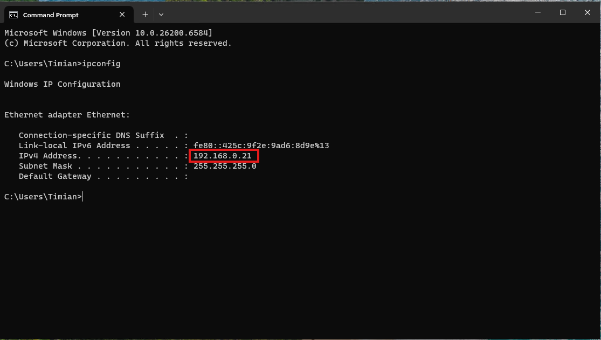
Steg 1 – CMD
Åpne CMD
Skriv "ipconfig" og trykk enter
Se etter at IP adressen er "192.168.0.21"
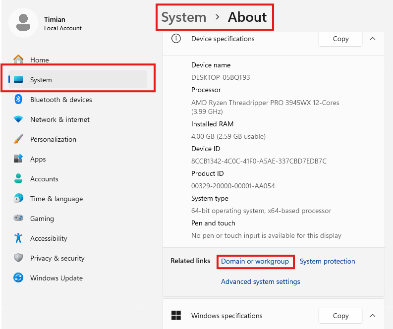
Steg 2 – Settings
Åpne "Instillinger" på pc.
Klikk på "System"
Klikk "About"
Klikk på "Domain or Workgroup"
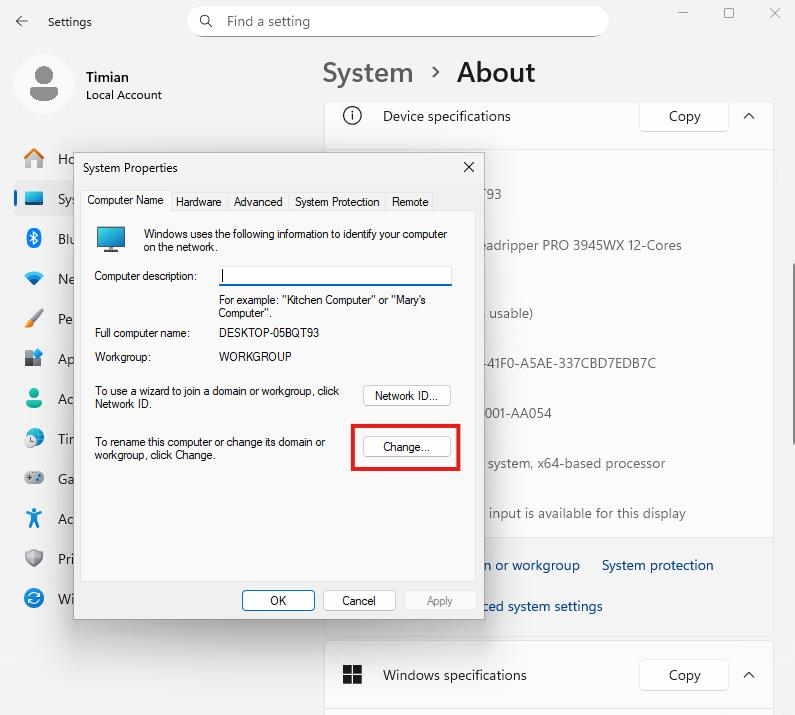
Steg 3 – Change
Klikk "Change..."
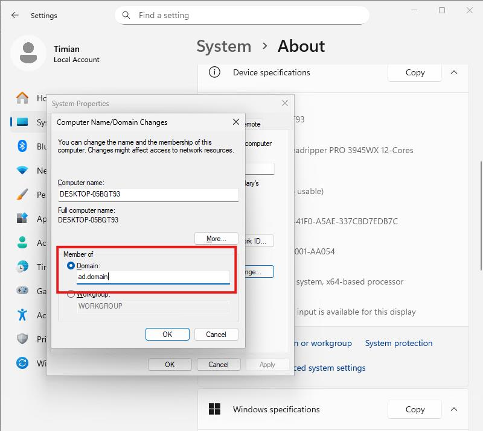
Steg 4 – ad.domain
Huk av "Domain"
Deretter skriv inn "ad.domain"
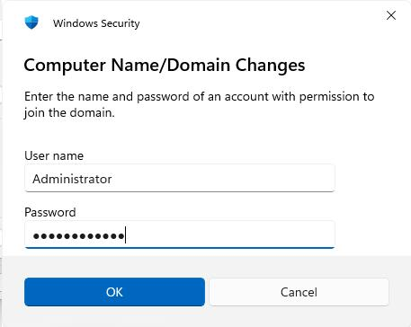
Steg 5 – Computer name
Skriv inn nytt Username Som eksempel "Administartor"
Deretter skriv inn passord det kan være lurt og notere passord og brukernavn ned.
Klikk "OK"æ
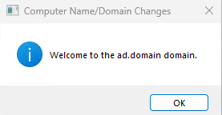
Steg 6 – OK
Klikk "OK"
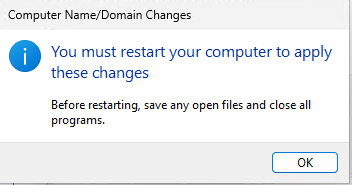
Steg 7 – OK
Klikk "OK"
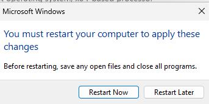
Steg 8 – Restart now
Klikk "Restart Now"
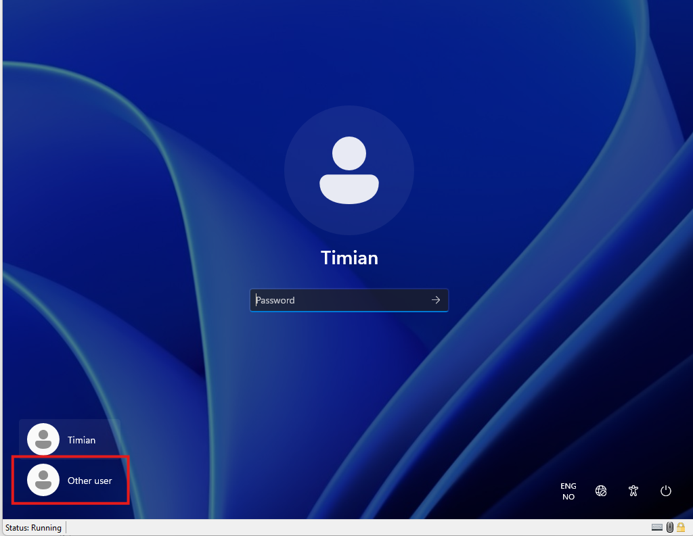
Steg 9 – Other user
Klikk "Other User"
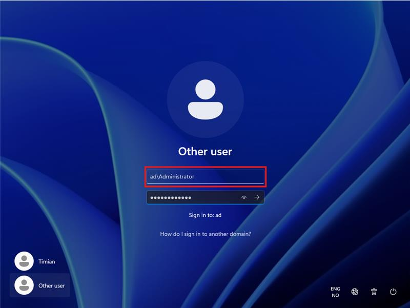
Steg 10 – ad/Adminisrator
Skriv inn brukernavnet som "ad/Administrator"
Deretter skriv inn passordet.
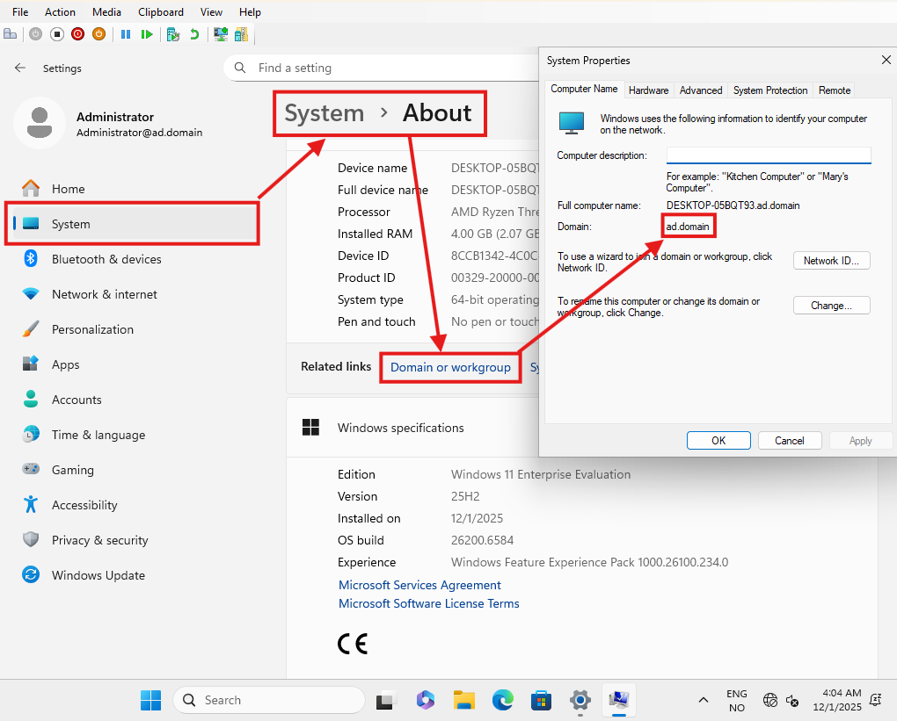
Steg 11 – ad.Domain
Åpne "Instillinger"
Klikk "Systems"
Klikk "About"
Klikk "Domain or workgroup"
Deretter se at det står "ad.domain".